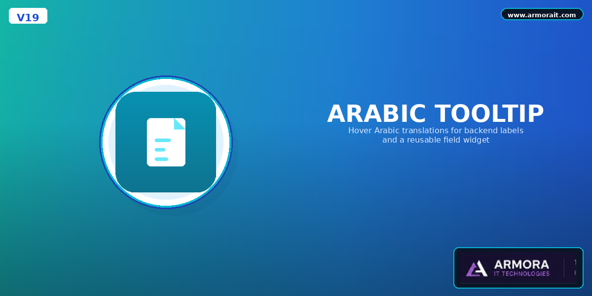
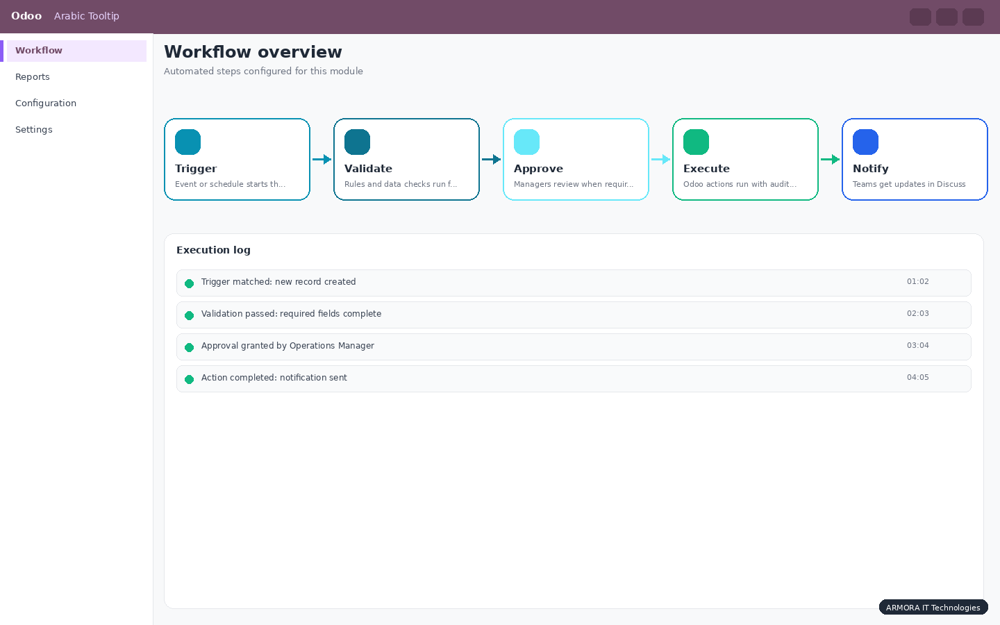
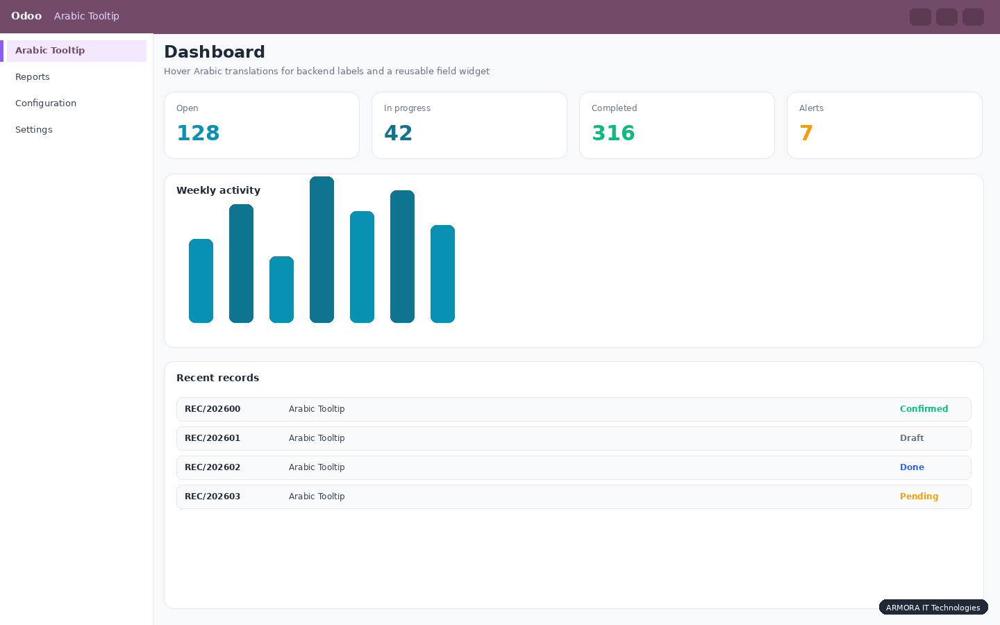
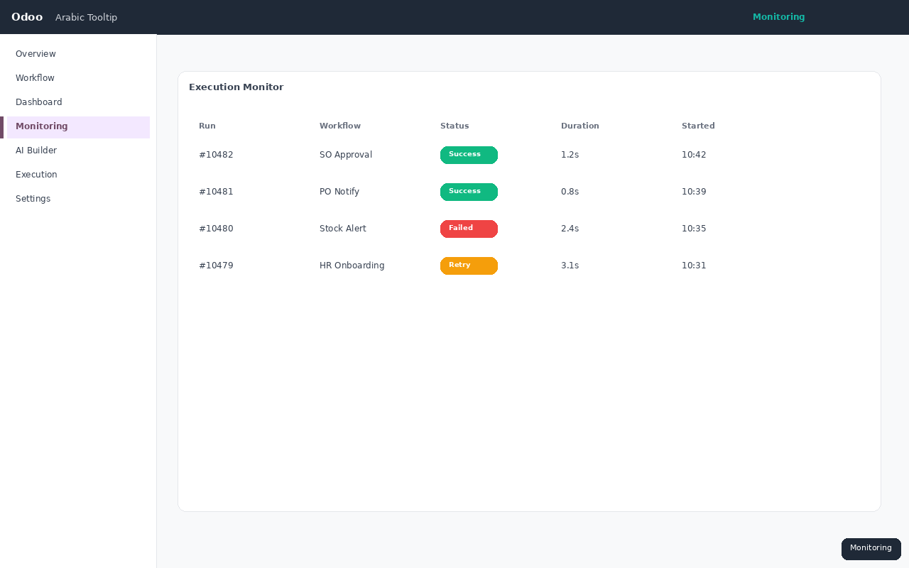
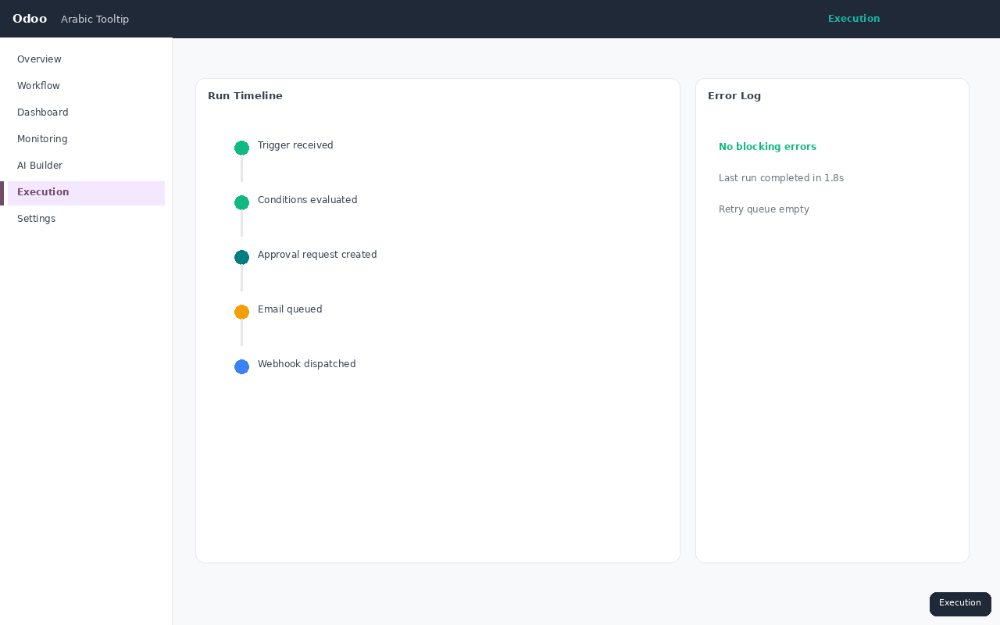

Help bilingual finance and operations teams work in English while seeing accurate Arabic terms on hover. No duplicate forms. No manual label lists in every view.

Saudi and GCC companies often run Odoo in English for daily operations, while staff still need Arabic terminology for invoices, accounting, and compliance. Switching UI language breaks training material and SOPs. Static translations in every form are expensive to maintain.
Arabic Tooltip adds a lightweight translation layer on top of the standard Odoo backend. Hover any supported label to see Arabic text sourced from Odoo translations, with a built-in accounting fallback dictionary when needed.

Automatically decorates form labels, list headers, notebook tabs, and common field labels across the backend.
Attach Arabic hover hints to any field value and its label. Included demo on customer invoices.
Reads Odoo Arabic catalog first, then falls back to a curated accounting dictionary for finance terms.

Customer invoice fields with Arabic hint widget

Backend labels with Arabic hover tooltips

Does it work on Odoo 19 Community?
Yes. Built for Odoo 19 Community with OWL 2 assets.
Do I need Arabic installed as a language?
Recommended. The module uses Odoo translations first and falls back to the built-in accounting dictionary.
Can I add my own terms?
Yes. Extend the fallback dictionary or rely on Odoo translation exports.
Does it change the UI language?
No. The interface stays in English. Arabic appears only on hover.
ARMORA IT Technologies
www.armorait.com
info@armorait.com